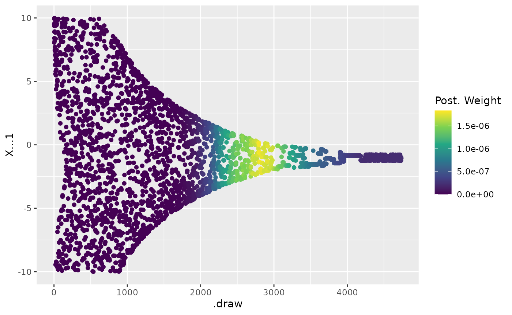

Nested Sampling with Ernest
nested-sampling-with-ernest.RmdNested sampling (NS) is a Bayesian statistical method designed to address the problems of parameter estimation and model selection. At its most general, (NS) is a method for estimating a solution to a integral over a high-dimensional space; in practice, this integral is usually the marginal likelihood of a given model given some data, over a specified prior parameter space. The method, originally introduced by John Skilling, has since been applied to a wide range of problems in astrophysics, cosmology, and other fields.
The Easy R Nested Sampling Toolkit (or ernest) provides
a collection of tools for performing nested sampling within
R. Given a user-provided log-likelihood function contains
functions for starting, continuing, and reviewing the results of a
nested sampling run. The package is designed to be flexible and easy to
use, and is intended to be a useful tool for researchers who wish to
apply nested sampling to their own problems. This document glosses over
the mathematical details that allow for nested sampling, instead
focussing on providing an overview of ernest’s
construction, and with providing an example of how it can be applied
within a statistical analysis.
Getting Started
In addition to specifying the dimensionality of their problem (i.e.,
how many parameters are in their model of interest, or
n_dim), ernest requires the user to provide
two functions that describe the model’s log-likelihood and a prior space
transformation.
Log-Likelihood Function: log_lik
This function must take in a vector of parameters equal in length to
n_dim. For each input, the function should return the
scalar-valued log-likelihood of the model. In cases where the this value
is not finite, the function should return -Inf.
Example: A Two-Dimensional Multivariate Gaussian Distribution
num_dim <- 2
sigma <- diag(num_dim)
sigma[sigma == 0] <- 0.95
log_lik <- \(x) {
mvtnorm::dmvnorm(x, mean = c(-1, 1), sigma = sigma, log = TRUE)
}
tibble(
expand.grid(
"x" = seq(-10, 10, length.out = 500),
"y" = seq(-10, 10, length.out = 500)
),
"ll" = log_lik(cbind(x, y))
) |>
ggplot(aes(x, y, fill = ll)) +
geom_raster() +
scale_fill_viridis_c(expression(italic(LL)(theta)))
## Prior Space Transformation: prior_transform
Like other implementations of nested sampling, ernest
generates possible parameter vectors by performing likelihood-restricted
prior sampling within the (0-1)-unit hypercube. The
prior_transform function is responsible for taking these
vectors and transforming it to the original parameter space specified by
a given prior distribution.
This function must take in a vector of parameters equal in length to
n_dim whose components are guaranteed to be in the range
.
For each input, the function must return an n_dim-length
vector of parameters in the original parameter space. Each component of
this vector should be a finite value.
Example: A Uniform Prior in 2D-Space
prior_t <- \(u) qunif(u, min = -10, max = 10)Choosing a Likelihood-Restricted Prior Sampler
Nested samplers require a method for generating proposed parameter
vectors by taking independent samples from the prior distribution,
conditional on some minimum likelihood constraint. Currently,
ernest offers two samplers that can be chosen using the
sampler argument on nested_sampling(), but
more sophisticated options are scheduled for development.
Uniform Sampling: uniform_cube()
The uniform_cube() is the most basic implementation of a
region-based sampler, where points are proposed by sampling uniformly
within the unit hypercube until a point exceeds the likelihood
constraint. This method is helpful for verifying the correctness of a
nested sampling run by performing it with limited iterations, but its
inefficiency renders it largely unhelpful for practical use.
Calling unif_cube() also provides the user an
opportunity to set the ernest.max_loop option in their
environment. This is intend to serve as a safety check, killing a run if
a sampler exceeds a reasonable number of iterations in attempting to
proposal a point under the likelihood contraint. As such, it generally
should be set to a very high number, with 1e6L being the
default.
Random Walk in the Unit Hypercube: rwmh_cube()
The rwmh_cube is a basic implementation of a MCMC-based
sampler, where points are generated by performing a random walk within
the unit hypercube, accepting proposed points that exceed the likelihood
constraint. This method closely resembles the original proposed LRPS
detailed in Skilling, and is reasonably effective for low- to
middle-dimensional problems (i.e., between 1-to-20).
The user can set the number of steps, the initial step size, and the
target acceptance ratio of the sampler. Unlike Skilling’s original LRPS,
ernest applies a Newton-Raphson optimization to adjust the
step size throughout the run to target the desired acceptance ratio. The
number of calls to the likelihood function between each update can be
set with the update_interval argument in
nested_sampling().
Running Nested Sampling with Ernest
Using the 2D-Gaussian likelihood example provided earlier, along with
the uniform gaussian prior, we can perform a nested sampling run with
the rwmh_cube() sampler. First,
nested_sampling() takes in the user provided functions, a
ptype defining the number of variables or a vector of
character names (should one want prettier output), and other user-set
parameters. Importantly, the user can set the verbose
parameter to TRUE to receive updates on the progress of the
run.
sampler <- nested_sampling(
log_lik,
prior_transform = prior_t,
ptype = 2L,
n_points = 500L,
sampler = rwmh_cube()
)
sampler
#> Nested Sampling Run from ernest
#> 500 Live Points, 0 Samples Generated.
#> ℹ Estimate log. evidence with `generate()`.This produces an R6 object with the class
ernest_sampler. This object is responsible for dispatching
across the various functions that ernest provides for
generating and reviewing the results of a nested sampling run.
To begin nested sampling, the generate() method is
called on sampler. This accepts a number of parameters that
indicate at which point to stop nested sampling. For example, one can
run the sampling until 1000 iterations are performed.
run1 <- generate(sampler, max_iterations = 1000)
run1
#> Nested Sampling Run from ernest
#> 500 Live Points, 1000 Samples Generated.
#> Estimated Log. Evidence: -6.2767To improve the evidence estimate from this model, the user can
continue a run by calling generate() on a
previously-generated ErnestSampler. By setting the
dlogz option, nested sampling will be stopped once the
log-ratio between the current estimated evidence and the remaining
evidence falls below some criterion.
run2 <- generate(sampler, min_logz = 0.05)
run2
#> Nested Sampling Run from ernest
#> 500 Live Points, 4237 Samples Generated.
#> Estimated Log. Evidence: -6.1186Results
A nested sampling run’s results can be viewed by calling different
arguments over the ErnestSampler object. For example, by
calling calculate() on run2, one receives a
tibble containing the results of the iterative evidence
estimates.
integral <- calculate(run2)
tail(integral)
#> # A tibble: 6 × 7
#> .iter log_lik log_vol log_weight log_z log_z_var information
#> <int> <dbl> <dbl> <dbl> <dbl> <dbl> <dbl>
#> 1 4732 -0.674 -12.9 -15.4 -6.12 0.0108 4.50
#> 2 4733 -0.674 -13.1 -15.4 -6.12 0.0109 4.50
#> 3 4734 -0.674 -13.3 -15.4 -6.12 0.0110 4.50
#> 4 4735 -0.674 -13.6 -15.4 -6.12 0.0112 4.50
#> 5 4736 -0.674 -14.0 -15.4 -6.12 0.0114 4.50
#> 6 4737 -0.674 -14.7 -15.4 -6.12 0.0117 4.50The change in the evidence estimate over the course of the run can be
visualized by calling plot() on the
ErnestSampler object.
plot(run2)
We can also produce trace plots of the distributions of the points
across the run by calling visualize(which = "trace") on the
ErnestSampler object.
draws <- posterior::as_draws_df(run2, unit = TRUE)
ggplot(draws, aes(x = `.draw`, y = `X...1`, colour = exp(`.log_weight`))) +
geom_point() +
scale_colour_viridis_c("Post. Weight")
ggplot(draws, aes(x = `.draw`, y = `X...2`, colour = exp(`.log_weight`))) +
geom_point() +
scale_colour_viridis_c("Post. Weight")